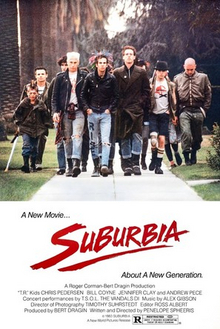

Penelope Spheeris
1983
94 minutes
TITLE: Suburbia TEXT PLACEHOLDER 217
This is one of two films by this name which you always get confused. This particular one is Suburbia by Penelope Spheeris, who directed Decline of Western Civilization and, later, Wayne's World of all things. The other one is the Richard Linklater film SubUrbia (notice the capital-U) which was based on a play by Eric Bogosian. Several of your friends have seen one or the other of these and recommended them to you over the years, but you couldn't be sure which was being recommended and they somehow blurred into one film. This is the punk-punk one, where a bunch of punk runaways and fuckups all live in the same house and share a living space slightly less squalid than some of your friends' houses over the years (see section 183).
The only thing more squalid than the conditions of a communal punk living space is the conditions of the punks themselves. When you were a cabbie, you ended up hanging out one night with a guy who was good friends with some of your weirdest friends, a very easygoing and rather charismatic guy named Stan who had recently gotten out of jail. Your friends were otherwise occupied that night, so you and Stan shared a pitcher and 2am rolled around too soon. Stan asked for a ride home and offered that he had a couple of beers cold in his fridge if you wanted to keep the night rolling and he'd see if he could roust anyone else to show up and hang out as well. Stan unlocked the door to the house he shared with a couple of other guys, and as soon as you walked in you were greeted by a horrifying sight. Stan's housemate, a small unkempt shirtless man, was lying motionless on the couch, mouth agape and eyes wide open, a needle hanging out of his arm. Stan called his name a few times, but the man didn't respond at all. Your blood ran cold and you froze in the doorway, not sure what to do.
Stan strode forward and slapped his housemate in the face very hard a few times. "HEY MOTHERFUCKER WAKE UP," he demanded. His housemate blinked his eyes, and Stan gave him another slap for good measure. "What the fuck are you doing?" Stan asked him angrily. "Do that shit in your own room, you fucking junkie prick! What the fuck if I had brought a girl home? What then? Clean this shit up!"
Stan's roommate started to put his works away and just then the doorbell rang. It was the pizza guy. His roommate staggered over to the door, still shirtless, and dug in his pocket for a couple of bills to give the pizza guy. Apparently he had gotten impatient while waiting for his pizza and decided to nearly overdose to kill time before its arrival. Stan grabbed a couple of beers out of the fridge still swearing to himself while you tried to calm down. It may have been the first time you would think you had found a dead junkie, but it wouldn't be the last, and some of the others never woke up. At least you didn't have to call 911 to figure it out.
Time to choose something different: